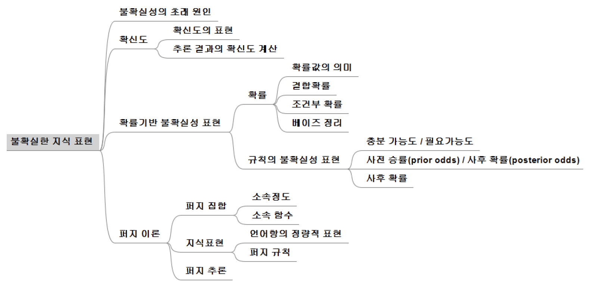

17th
함수에 의한 지식표현
기호 기반의 지식표현
- 기호를 사용하여 대상 표현
- 대상 간의 관계 표현
- 규칙, 프레임, 의미망, 논리 등
함수 기반의 지식 표현
비기호적 지식표현
- 기호 대신 수치값과 수치값을 계산하는 함수를 사용하여 지식을 표현
신경망과 딥러닝
- perceptron - 함수식 계산 출력 생성
- 다층 퍼셉트론
서포트 벡터 머신 (SVM)
regression 모델 등
불확실한 지식 표현

불확실성의 원인
약한 관련성의 지식
weak implication (약한 인과성)이나 애매한 연관관계 (vague association)인 지식의 표현
- ex) IF와 THEN 사이의 연관성의 강도
→ 확신도 (certainty degree) 사용 표현
→ 베이즈 정리 (Bayesian theorem) 사용 표현
부정확한 언어 사용
자연어 (natural language)는 본질적으로 모호하고 (vague) 부정확 (imprecise)
- ex) 자주 (frequently), 크다 (big), 무겁다 (heavy)
→ fuzzy theory (퍼지이론) 사용 표현
불완전하거나 (incomplete) 결손된 (missing) 데이터에 기반한 지식
→ 알려지지 않은 것 (unknown)으로 간주하고 근사적인 추론 (approximate reasoning) 진행
상충되는 지식의 통합
모순된 견해 (contradictory opinion)와 상충된 지식 (conflicting knowledge)의 통합
→ 지식 소스 별로 가중치 부여
확신도 (certainty factor)
규칙 (rule)과 사실 (fact)의 신뢰정도를 [-1, 1] 구간의 값으로 표현
- 1 (단정적 신뢰), -1 (단정적 불신)
규칙과 사실에 확신도 \(cf\) 부여

규칙에 대한 추론 결과의 확신도


확률기반 불확실성 표현
확률 (probability)
어떤 사건이 일어날 가능성
상대빈도 확률 (relative frequency probability)
빈도주의자 확률 (frequentist probability)
전체 실험 회수 대비 관심 사건의 상대적 빈도

주관적 확률 (subjective probability)
확신 또는 믿음의 정도 (degree of belief)
결합 확률 (joint probability)
사건 A와 B가 동시에 일어날 확률
\[ P(A, B), P(A \cap B), P(AB) \]

conditional probability (조건부 확률)
B가 주어질 때 A가 일어날 확률
\[ P(A | B) = \frac{P(A \cap B)}{P(B)}~where~P(B) > 0 \]

Bayesian theorem (베이즈 정리)
\[ P(A | B) = \frac{P(B | A)P(A)}{P(B)} \]
\(P(A|B)\): 사후확률 (posterior probability)
\(P(B | A)\): 가능도 (likelihood)
\(P(A)\): 사전확률 (posterior probability)
\(P(B)\): 증거 (evidence)
확률을 이용한 규칙의 불호가실성 표현
전문가에 의한 각 규칙 충분 가능도 LS, 필요 가능도 LN값 부여
규칙: \(A \to B\)
충분 가능도 (likelihood of sufficiency)
\[ LS = \frac{P(A | B)}{P(A | \neg{B})} \]
필요 가능도 (likelihood of necessity)
\[ LN = \frac{P(\neg{A} | B)}{P(\neg{A} | \neg{B})} \]
사실 또는 추론 결과에 대한 사전확률 (prior probability) 부여

사전 승률 (prior odds)
\[ O(B) = \frac{P(B)}{1 - P(B)} \]
사후 승률 (posterior odds)
\[ O(B | A) = LS \times O(B) \]
\[ O(B | \neg{A}) = LN \times O(B) \]
사후 확률
\[ P(B | A) = \frac{O(B | A)}{1 + O(B | A)} \]
\[ P(B | \neg{A}) = \frac{O(B | \neg{A})}{1 + O(B | \neg{A})} \]

퍼지 이론
집합론
자연어의 단어 (word)는 집합의 궁극적인 표현
- ’자동차’는 자동차의 집합
- ’자동차 한 대’는 자동차 집합의 원소 하나
일반 집합 (crisp set, classical set) X
- 원소 x는 X에 속하거나 (\(x \in X\)), X에 속하지 않거나 (\(x \notin X\)) 둘 중 하나
- 집합에 명확한 경계를 긋고, 잡합의 원소에는 1, 원소가 아닌 것에는 0의 소속 (membership)